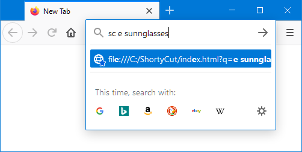

Browser integration
Browser integration
To intercept keywords and redirect to the corresponding pages, ShortyCut needs to be integrated with the browser. There are different methods to accomplish this.
Homepage
Using ShortyCut's homepage is the easiest approach that works across all browsers. It's also the most convenient way to enter keywords because it displays suggestions:

ShortyCut's homepage can be set as the browser's start page or pinned as a permanent tab. See "Homepage" for details.
Keyword query
A keyword query is a lightweight method to make shortcuts accessible through the browser's address bar. ShortyCut itself is bookmarked and a keyword is assigned to it. This only works with browsers that natively support keywords.
The keyword assigned to the ShortyCut bookmark (e.g. sc) needs to be entered before the actual keyword itself.
If the shortcut e performs a product search on eBay, then a search for sunglasses would be started via:

Having to enter ShortyCut's own keyword (sc) first, allows it to be used on a case-by-case basis,
while preserving the address bar's default behavior for everything else.
See "Keyword query" for details.
Web server
When ShortyCut is accessed through a web server, it can be used as the browser's default search engine. Keywords can be entered directly in the address bar, without requiring an additional keyword for ShortyCut itself:

This method has better browser support than keyword queries. However, it requires a small web server to run on the local machine or ShortyCut to be uploaded to a web hosting service. See "Web server" for details.